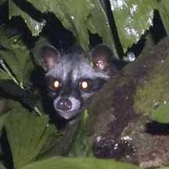
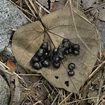
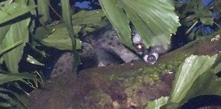

|
|
| vertebrates text index | photo index |
| Phylum Chordata > Subphylum Vertebrata > Class Mammalia |
| Common palm civet Paradoxurus hermaphroditus Family Viverridae updated Oct 2016 Where seen? This cute little 'bandit' of a beast is sometimes seen at dusk or at night. But it is quiet and shy and easily spooked. It is not a cat! According to Baker, in Singapore, it is widespread and common even in urban areas where it lives in the roof spaces of buildings and forages in gardens. They travel between houses via telephone wires, poles and trees. It is also found in forest, scrubland, parks and mangroves. It is more active at night and tends to stay in the trees and high places (arboreal). Features: Head and body to 59cm, tail to 53cm. Long sleek body with short limbs and a long tail. It has a long muzzle and small ears. Body dark greyish brown with three fine, broken black stripes along the back and black spots on the sides. It has a black 'mask' across a pale face and black ears and paws. The tail is black with a white tip. What does it eat? It is omnivorous and is said to have a particular fondness for fruits. But it also eats insects and small animals that it can catch. Baby civets: Civet cats are not social and usually live alone. Except for a mother and her young. Mama civet gives birth to 2-5 kittens, usually in a tree hollow, crevice or other hiding place. Babies are born with their eyes closed. They are mature at 11-12 months. Civet cats can live for 22-24 years. Role in the habitat: As a fruit eater, it helps to disperse seeds and contributes to the regeneration of forests. |
 Chek Jawa, Oct 07  Civet poop? Pulau Ubin, May 09 |
| It
is also called the Toddycat for its apparent fondness for stealiing
the sap collected from palm trees, the same sap used to make the alcoholic
drink called 'toddy'. The Toddycat and Palm leaf is part of the logo
of the Raffles Museum of Biodiversity Research (RMBR) at the National
University of Singapore. Here's more
about the logo. The Malay name for it is 'musang'. Civet-processed coffee: 'Kopi Luwak' is a type of expensive gourmet coffee made from coffee beans that have been 'processed' by a civet cat. In nature, the civet cat eats coffee beans, among many other natural food. The coffee beans which are excreted by the civet cat are collected to be made into coffee for humans to drink. Unfortunately, growing demand has resulted in cruel abuse of civet cats to produce this coffee. The civet cats are caged, fed nothing but coffee beans and poorly looked after. Please do NOT support Kopi Luwak! More details on the Project LUWAK SG facebook page. Civet cats and SARS: Although widely reported to harbour and transmit SARS, there is no conclusive scientific evidence for this. The animals implicated in the SARS outbreak were masked palm civets (Paguma larvata) and not our Common palm civet. And there is no evidence of a direct link between these civet cats and the SARS outbreak in China. Besides the civet cat, two other kinds of animals were implicated as possible SARS reservoirs: the Raccoon dog (Nyctereutes procyonoides) and the Chinese ferret badger (Melogale moschata). The SARS outbreak, however, does point to the dangers of viruses jumping from wild species due to human consumption of wildlife and closer interaction with wildlife as we encroach on and destroy wild habitats. |
| Civet stories: Its scientific name hermaphroditus came about because both males and females have scent glands underneath the tail that resemble testicles. A noxious secretion is sprayed from these glands. The durian is sometimes called the civet cat fruit because it too smells bad. |  Chek Jawa, Oct 07 |
|
| Common palm civets on Singapore shores |
| Photos of Common palm civets for free download from wildsingapore flickr |
| Distribution in Singapore on this wildsingapore flickr map |
|
Links
References
|
|
|